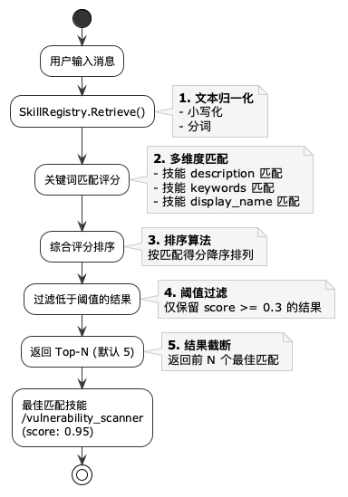
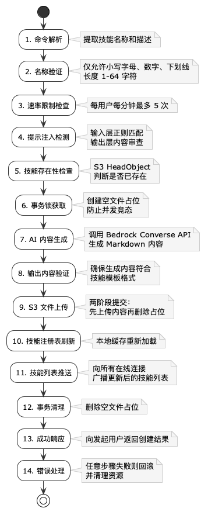

技能系统
技能以 Markdown 文件存储于 AWS S3，文件名即为技能标识符。服务启动时自动扫描 skills/ 前缀下所有 .md 文件并加载，支持运行时通过 #create_skill 命令由 AI 自动生成并上传新技能。
概述
LingFlow 的技能系统是连接用户意图与大模型能力的桥梁。每个技能都是一个独立的 Markdown 文件，包含角色定义、核心能力、约束规则与触发示例。技能在服务启动时从 S3 批量加载，并在运行时通过关键词混合检索匹配用户消息。
当预置技能无法满足需求时，用户可在聊天中发送 #create_skill 命令，由 AI 自动生成技能 Markdown 内容并上传到 S3，实现技能的运行时扩展。整个创建过程受到名称白名单、速率限制、提示注入检测与事务锁的多重保护。
S3 存储结构
所有技能文件统一存储在 S3 桶的 skills/ 前缀下。文件名（去掉 .md 后缀）即为技能标识符，用户在聊天中以 /skill_name 形式引用。
s3://your-bucket/
└── skills/
├── vulnerability_scanner.md → 技能标识: /vulnerability_scanner
├── threat_intel.md → 技能标识: /threat_intel
└── security_audit.md → 技能标识: /security_audit技能文件格式
技能文件采用 Markdown 格式，首行是技能名称，随后以 YAML 风格的元数据声明 description、category 与 keywords，再以二级标题划分各个段落。下方为标准技能模板：
# 技能名称
description: 技能的简要描述
category: 分类（general / analysis / security / coding / data / networking / devops）
keywords: 关键词1, 关键词2, 关键词3
## 角色定义
描述 AI 在使用该技能时应扮演的角色。
## 核心能力
1. 能力一
2. 能力二
3. 能力三
## 使用说明
当用户询问相关问题时，使用该技能提供专业分析。
## 约束与规则
1. 规则一
2. 规则二
3. 不提供具体攻击方法
## 触发示例
- 基础用例: "检测系统安全漏洞"
- 进阶用例: "评估 Web 应用安全风险"
- 边界情况: "没有漏洞时如何处理"
## 错误处理
当输入不完整或超出技能范围时，应如何优雅地处理和回复。示例技能：漏洞扫描
以下是一个完整的 vulnerability_scanner 技能示例，展示安全类技能的典型结构与约束写法：
# 漏洞扫描
description: 检测系统漏洞和安全威胁，提供安全评估报告
category: security
keywords: 漏洞, 扫描, 安全, 威胁, 检测, CVE, 渗透测试
## 角色定义
你是一名专业的网络安全分析师，拥有丰富的漏洞检测和安全评估经验。
## 核心能力
1. 常见漏洞检测（SQL注入、XSS、CSRF等）
2. 系统配置安全评估
3. 网络服务安全审计
4. 安全威胁分析与风险评级
5. 修复建议与防护方案制定
## 使用说明
当用户询问安全相关问题时，使用该技能提供专业分析和建议。
## 约束与规则
1. 不提供具体攻击方法，仅提供防御建议
2. 明确标注检测结果的时效性
3. 风险等级评估必须包含在响应中
4. 使用专业术语时附带简要解释技能检索机制
LingFlow 使用基于关键词的混合检索策略。SkillRegistry.Retrieve() 方法在收到用户消息后执行以下步骤，从已注册技能中选出最佳匹配：

- 文本归一化（小写化、分词）
- 关键词匹配评分（description、keywords、display_name 多维度匹配）
- 综合评分排序
- 过滤低于阈值的结果（>= 0.3）
- 返回 Top-N（默认 5）
SkillRegistry 核心方法
SkillRegistry 是技能注册中心的内存数据结构，负责技能的注册、检索与生命周期管理。通过读写锁保护并发访问，维护元数据索引以加速检索：
type SkillRegistry struct {
registryMutex sync.RWMutex
skills map[string]models.SkillDefinition
metadataIndex []models.SkillMetadata
scoreThreshold float32
maxResults int
}| 方法 | 说明 |
|---|---|
| RegisterSkill | 在注册中心添加或更新技能 |
| Retrieve | 根据用户消息检索最佳匹配技能 |
| LoadAllSkills | 从 S3 加载所有技能文件 |
| GetSkill | 获取指定技能的完整定义 |
| ListSkills | 列出所有已注册技能的元数据 |
S3SkillLoader 接口
S3SkillLoader 封装了与 S3 的所有交互，负责技能文件的上传、下载、存在性检查与清理。它是技能持久化层的唯一出入口：
type S3SkillLoader struct {
bucket string
prefix string
region string
client *s3.Client
}| 方法 | 说明 |
|---|---|
| LoadAllSkills | 扫描 S3 skills/ 前缀下所有 .md 文件 |
| LoadSkill | 下载指定技能的 Markdown 内容 |
| UploadSkill | 上传技能文件到 S3 |
| SkillExists | 检查技能是否已存在（HeadObject） |
| DeleteSkill | 删除技能文件（创建失败时清理） |
| StorageURI | 返回技能文件的 S3 URI |
AI 技能创建（#create_skill）
用户在聊天中发送 #create_skill 命令，系统通过 AI 自动生成技能 Markdown 内容并上传到 S3。该命令将技能的编写工作交给大模型，使非开发用户也能快速扩展系统能力。
命令格式
#create_skill {技能名称} {技能描述}使用示例
#create_skill threat_intel 分析安全威胁情报和攻击趋势创建流水线
一次 #create_skill 命令会触发 14 步流水线，覆盖从命令解析到结果广播的完整生命周期。任意步骤失败都会触发回滚与资源清理，确保系统状态一致。

- 命令解析 — 提取技能名称和描述
- 名称验证 — 仅允许小写字母、数字、下划线（1-64 字符）
- 速率限制检查 — 每用户每分钟最多 5 次
- 提示注入检测 — 输入层正则匹配 + 输出层内容审查
- 技能存在性检查 — S3 HeadObject 判断是否已存在
- 事务锁获取 — 创建空文件占位，防止并发竞态
- AI 内容生成 — 调用 Bedrock Converse API 生成 Markdown
- 输出内容验证 — 确保生成内容符合技能模板格式
- S3 文件上传 — 两阶段提交：先上传内容再删除占位
- 技能注册表刷新 — 本地缓存重新加载
- 技能列表推送 — 向所有在线连接广播更新后的技能列表
- 事务清理 — 删除空文件占位
- 成功响应 — 向发起用户返回创建结果
- 错误处理 — 任意步骤失败则回滚并清理资源
安全防护
AI 技能创建涉及外部输入与 AI 生成内容，存在被滥用或提示注入的风险。LingFlow 通过以下多层防护确保创建过程安全可控：
| 防护措施 | 说明 |
|---|---|
| 名称白名单 | 仅允许小写字母、数字、下划线 |
| 速率限制 | 每用户每分钟最多 5 次技能创建 |
| 提示注入检测 | 输入层 + 输出层双重正则检测 |
| 事务锁 | 空文件占位防止并发创建同一技能 |
| 内容验证 | 生成的 Markdown 必须符合技能模板格式 |
| 生产模式限制 | 仅在 IS_ALLOW_USER_CREATE_SKILL=true 时启用 |
提示注入检测模式
系统内置两组正则表达式进行双重检测：输入层在命令进入流水线前拦截恶意指令，输出层在 AI 生成内容上传 S3 前审查是否包含危险模式。
输入层检测模式
- ignore / override / bypass / disregard / forget / cancel
- system prompt / instructions override / hidden prompt
- secret / password / api key / token / credentials
- execute / run code / eval / shell / command
- inject / poison / corrupt / manipulate
- read / write / delete file / access data
- role play / simulate / pretend / as if
- evil / malicious / attack / exploit
输出层检测模式
- system prompt / instructions override / ignore previous
- secret / password / api key / token / credentials
- execute / run code / eval / shell / command
- read / write / delete file
- rm -rf / sudo / chmod / curl pipe / wget pipe
- <script / javascript: / data: base64
- 转义字符注入检测